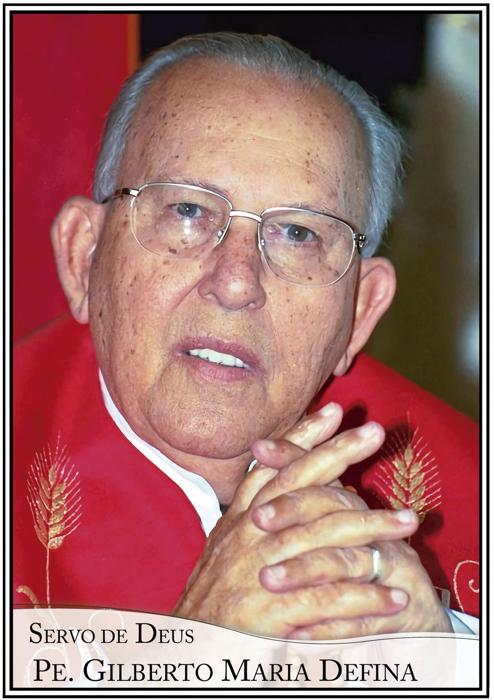

Sobre o Instituto
Nosso Fundador
Servo de Deus Padre Gilberto Maria Defina, sjs — uma vocação de louvor e santidade.

Servo de Deus
Padre Gilberto Maria Defina, sjs
- Nascimento 02 de agosto de 1925
- Páscoa definitiva 05 de dezembro de 2004
- Ordenação sacerdotal 03 de dezembro de [ano a definir]
- Fundação da Fraternidade [data a definir]
- Causa de canonização Em processo de beatificação
Inspirado pela devoção a Nossa Senhora de Pentecostes, o Padre Gilberto deu origem à Fraternidade Jesus Salvador, hoje presente em seus dois institutos religiosos e em toda a esfera laical Salvista.
Um Padre Mariano
O carisma mariano esteve intrinsecamente ligado à vida do Padre Gilberto — em seus pensamentos, orações e no amor incondicional a Nossa Senhora, hoje padroeira da Fraternidade que fundou.
A busca diária da virtude
Sua vida é lembrada pela busca constante da santidade — testemunho vivo para todos os que hoje seguem seus passos na Fraternidade Jesus Salvador.
"Embora não vendo mais Jesus, acreditem em Jesus, que amem o Senhor Jesus embora não o tenham conhecido." Padre Gilberto Maria Defina, sjs
Reze e envie seu testemunho
Você recebeu alguma graça por intercessão do Servo de Deus Padre Gilberto? Compartilhe seu testemunho e ajude a difundir sua causa de beatificação.
Enviar testemunho